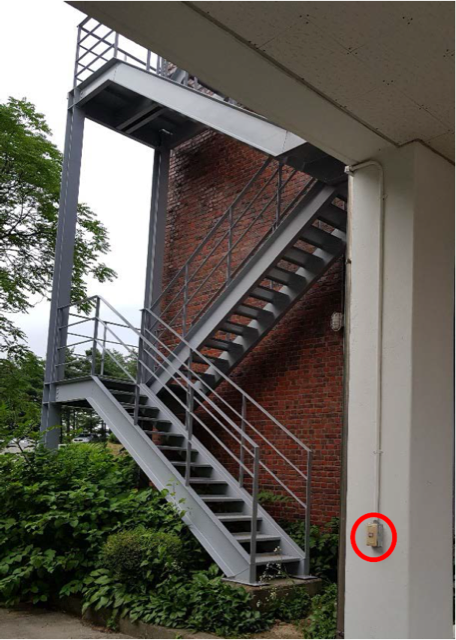

주의: 오르막길투성이입니다. 셔틀버스를 타는 것보다 시간은 조금 절약되지만, 힘들 수 있습니다.
김태영기념관측소(통칭 돔): 66동 학군단 옥상 (지도에는 학군단이라고만 나옵니다. 46동 천문관측소로 가면 안됩니다!)
1. 중앙도서관 관정관 1층 입구입니다. 여기가 어디냐고 묻는다면 할 말이 없습니다. 사진 왼쪽의 계단으로 올라갑니다.
2. 벌써 힘들지도 모르지만, 아직 한참 남았습니다. 다 올라가면 우회전합니다.
3. 오른쪽에 보이는 계단으로 올라갑니다.
4. 그 계단은 이렇게 생겼습니다. 올라가서 우회전합니다. 길이 오른쪽뿐이긴 합니다.
5. 쭉 올라가서 오른쪽을 봅니다.
6. 저기 보이는 조그만 계단을 올라갑니다.
7. 돔까지 가는 수많은 계단들 중 가장 낮습니다. 올라가서 또 오른쪽을 봅니다.
8. 143동 신약개발센터 우측으로 들어갑니다.
9. 또 계단입니다. 올라가서 우회전, 우회전합니다.
10. 컨테이너를 끼고 좌회전, 좌회전합니다. 첫번째 좌회전은 좌회전 외에는 불가능하지만, 두 번째 좌회전에서 우회전하면 43-1동 멀티미디어강의동으로 가 수업을 들어버리게 됩니다.
11. 사진의 사람들은 내려오고 있지만, 우리는 올라갑니다. 보통 이쯤에서 케이블카를 간절히 원하게 됩니다.
12. 열심히 케이블카를 갈망하다 보면 갈림길이 나옵니다. 좌회전하면 안내판대로 교수회관이 나오므로, 우리는 우회전합니다.
13. 그 다음으로 29동 약학관2를 좌측 전방에 낀 갈림길이 나옵니다. 좌회전합니다.
14. 어째 한동안 계단이 안 나온다 했습니다. 한 명 갈 폭 밖에 안 되는 저 계단을 올라간 뒤 우회전합니다.
15. 벽돌 건물(출판문화원) 오른쪽 길로 갑니다. 얼마 남지 않았으니, 조금만 더 힘을 냅시다.
16. 길 끝까지 갔으면 운동장을 오른쪽에 두고, 왼쪽을 봅니다.
17. 저 곳이 바로 돔입니다! 태극기 오른쪽으로든 왼쪽으로든 아무튼 태극기 반대편으로 갑니다.
18. 저기 보이는 철계단을 올라갑니다.

19. 밤에 어두워서 아무것도 안 보일 때, 표시된 스위치를 누르면 계단의 전등이 켜집니다.
20. 한 걸음 한 걸음 내딛을 때마다 무너질 것 마냥 흔들리지만 괜찮습니다.
21. 계단 끝에 보이는 옥상의 모습입니다. 올라가서 왼쪽을 봅니다.
22. 드디어 돔에 도착했습니다. 혹여 문이 열려있지 않다면, 인내심을 갖고 기다리면 기다리면 누군가 올 겁니다.